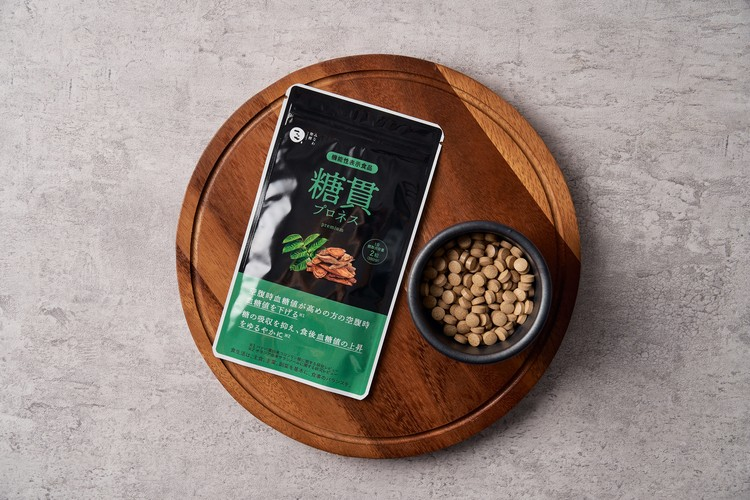
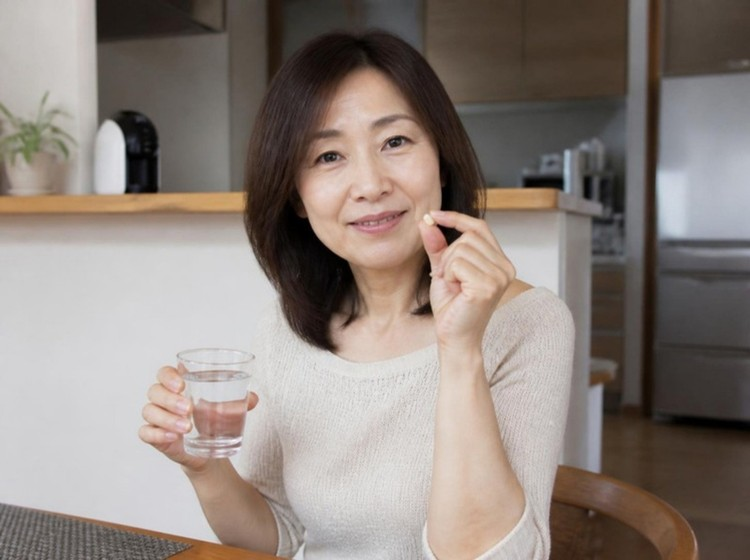
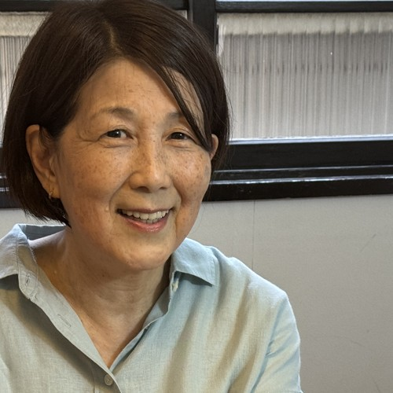
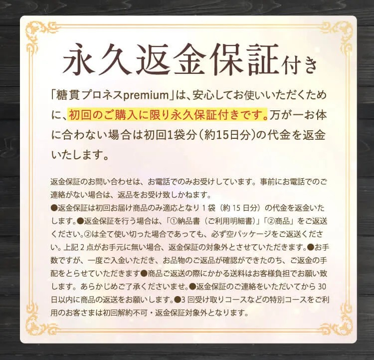
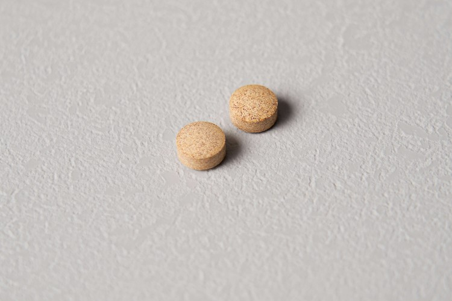

“食べることが好き”な人ほど知らない事実
我慢の前に知りたかった
“2つの血糖値”の話
※個人の感想です。画像はイメージです。
こんな方に読んでほしい
ひとつでも当てはまったら、
我が家の話が参考になるかもしれません。
去年の秋、夫婦そろって受けた健康診断。
夫は会社の健診、私はパート先の健診。
届いた結果票を2人で開いて、
しばらく動けませんでした。
それは・・・
たった1文字でした。
空腹時血糖の欄に、
そろって「H」。
私は47歳、夫は50歳。
血糖値なんて、
まだ先の話だと思っていました。
自覚なんて何もなかったのに、
お医者さんからは
「食事と運動に気をつけて
様子を見ましょう」と。
ラーメンと白いご飯が大好きな夫と、
子どものお弁当の残りと3時のおやつが
楽しみな私。
さて、どうしよう・・・
まずは好物を“ゼロ”に。でも…
次の日から、夫は夜のご飯抜き、
私はおやつを封印。
最初の1週間は、なんとかなりました。
でも2週目の週末、
どら焼きを2つぺろり・・・💦
我慢したぶんを
取り返すみたいに食べてしまって、
そのあとは自己嫌悪。
夫は夫で、残業帰りに空腹でイライラ・・・
夫と始めた夜の散歩も、
帰りが遅い日と雨の日が続いて
自然消滅。
「ゼロか百か」で考えるほど、
続かなくなるんですよね。
そんなとき、
健康番組が好きな職場の先輩が
教えてくれたのが、この話。
＼血糖値は“1つ”じゃない!?／
ポイント
えっ、
健診の数字ばかり気にして、
毎日の「食後」のことは
考えたこともなかった・・・！
だったら、
どちらも意識できる方法がいいな。
そう思って調べてみると・・・
我が家で続いている、
毎日の“糖ケア習慣”とは？
見つけたのが、
機能性表示食品
「糖貫プロネスpremium」✨

私が気になっていた
「空腹時」と「食後」、
それぞれの血糖値に向けた成分が
1粒に2つ入っているんです。
届出表示を見ると、こんなふうに。
2つの機能性関与成分
※届出番号：H821。本品は疾病の診断、治療、予防を目的としたものではありません。
調べていくと、
研究のグラフも公開されていました。
バナバ葉由来コロソリン酸
12週間後の空腹時血糖値の変化率（%）
*p＜0.05、群間有意差。空腹時血糖値が高め（100–125mg/dL）の健常者30名を、バナバ葉由来コロソリン酸0.9mgを含むカプセルを摂取する群と含まないカプセルを摂取する群に分け、12週間摂取した試験。出典：Choi MS, et al. Food Funct. 2014;5(7):1621-30.（研究レビューの採用文献）
サラシア由来サラシノール
食後の血糖曲線下面積（mg·hr/dl）
*p＜0.05。空腹時血糖値が70mg/dl以上126mg/dl未満の健康成人男女48名を、サラシア由来サラシノール0.03mgを含む飲料を摂取する群と含まない飲料を摂取する群に分け、負荷食（米飯・ふりかけ）摂取後の血糖値の経時変化を測定した試験。血糖曲線下面積（AUC）が低いことは、一般に糖質の吸収が抑えられたことを表します。出典：北林広巳ら. 健康・栄養食品研究. 2007;10(2):23-36.（研究レビューの採用文献のうち代表的な1例）
数字で見せてくれるのは、
「これなら」と思えたポイントでした。
しかも、
GMPに準拠した国内工場で作られていて、
保存料・合成着色料・合成香料は
不使用。
お医者さんへのアンケートでも、
94.11%が「推奨できる」※
と答えているそうで、
ちょっと心強かったです。
※インターネットによるアンケート回答方式で内科医34名を対象に「糖貫プロネスpremium（機能性表示食品）の商品規格に関するアンケート」を実施。「糖貫プロネスを推奨できますか」という質問に「おすすめ／とてもおすすめ／ややおすすめ」と回答した割合94.11%（34名中32名）。調査期間：2025年11月26日〜12月2日、運営調査機関：医療統計研究所。本調査は個人のブランドに対するイメージを元にアンケートを実施・集計したもので（本ブランドの利用有無は聴取無し）、効果効能や優位性を保証するものではありません。
実際に続けてみて

粒が小さいので、
錠剤が苦手な私でもするっと飲めます。
においも気になりません。
食品なので、飲む時間は自由。
私はお昼ごはんとおやつの前、
夫は晩ごはんの前が
それぞれの習慣になりました。
好物もやめていません。
ご飯は少し控えめに、
どら焼きは夫と半分こ。
散歩はお休みの日に2人で。
我慢だけの毎日より、
ずっと気持ちがラクになりました♪
夫も「粒が小さくて飲みやすい」と、
毎晩の自分の習慣にしています。
実はこの糖貫プロネス、
シリーズ累計で
100万袋を突破しているそう！
※販売開始〜2026年5月11日のみなわ発酵全商品の出荷総数
使っている方の声も
たくさん見つかりました！

「夫婦で食事の前に」
ひろみさん／主婦
健診で夫婦そろって血糖値を指摘されてから、食事の前に飲むのが習慣になりました。粒が小さくて飲みやすいので、錠剤が苦手な私でも続けられています。
※個人の感想です。
「1日2粒（目安）で助かります」
野口さん／58歳
血糖値対策として食事や運動だけでなく、サプリでも対策したいと思い飲み始めました。丸い錠剤で飲みやすく、1日2粒（目安）なので助かります。
※個人の感想です。
「“飲むお守り”として」
田中さん／52歳
血糖値の数値が気になり飲むようにしました。機能性関与成分のバナバとサラシアがどちらも入っているのが嬉しいです。「飲むお守り」として続けたいです。
※個人の感想です。
「小粒で飲みやすいです」
一之瀬さん／45歳
忘れずに飲むように心がけています。嫌な味や香りがしない小粒で飲みやすいです。
※個人の感想です。
※野口さん・田中さん・一之瀬さんの声は公式サイト掲載のお客様の声より抜粋。
気になるお値段は？
正直、私が一番気になったのはここ。
公式サイトの定期コースなら、
初回1袋（約15日分）が
通常2,990円のところ…
500円
（税込・送料無料）
これなら、
1日あたり約33円。
コンビニのおやつより安いので、
「まずはこれで始めてみよう」
と思えました。
2回目以降は
2ヶ月ごとに2袋（1袋約30日分）、
総額8,160円（税込）のお届け。
1袋あたり4,080円で、
1日あたり約136円です。
定期といっても
お約束回数はなし。
変更やお休みは、
次回発送の7日前までに
電話1本でOKとのこと。
※初回1袋（約15日分）、2回目以降2ヶ月ごとに2袋（1袋約30日分）をお届けする定期コースです。2回目以降は1袋あたり通常価格より約32%OFFの4,080円（税込）、総額8,160円（税込）。※解約のご連絡があるまでは継続してお届けします。※変更・キャンセルは次回発送の7日前までにお電話ください。※初回価格は公式サイトのクーポン適用時の価格です。※1日あたりは初回500円÷15日、2回目以降8,160円÷60日で算出（1日2粒目安）。

もし体に合わなくても、
初回分は代金が返ってくるので、
始めるハードルが低かったです。
※永久返金保証は初回お届け分（1袋）のみが対象です。条件は公式サイトをご確認ください。
ただ、Amazonでは
過去に2度完売
したこともあるそうなので、
気になる方は早めのチェックがおすすめです。
※2024年9月25日／2024年10月11日時点にて完売（2024年10月17日時点・自社調べ）

我慢だけに頼らない、
毎日の糖ケア習慣を。
＼ 初回500円（税込）・送料無料 ／
※2回目以降は2ヶ月ごとに2袋 総額8,160円（税込）でお届けします。